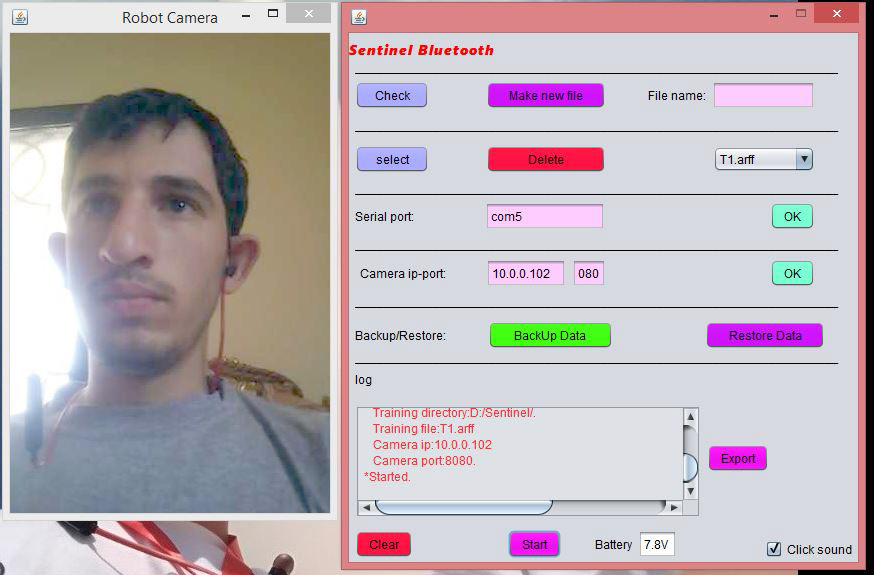
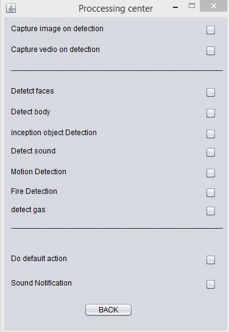
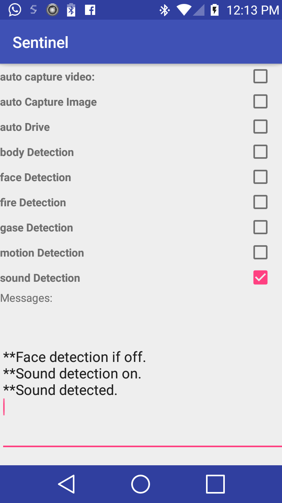
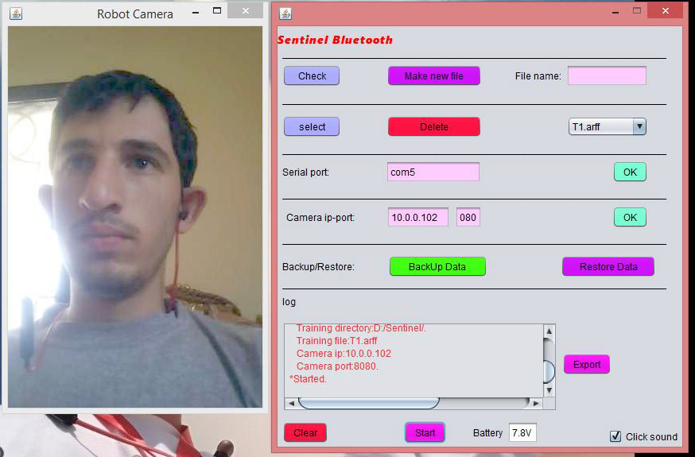
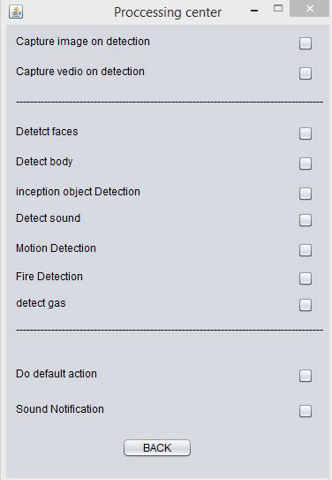
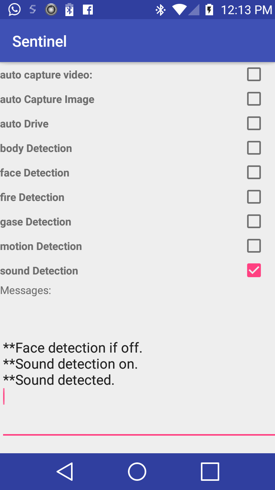
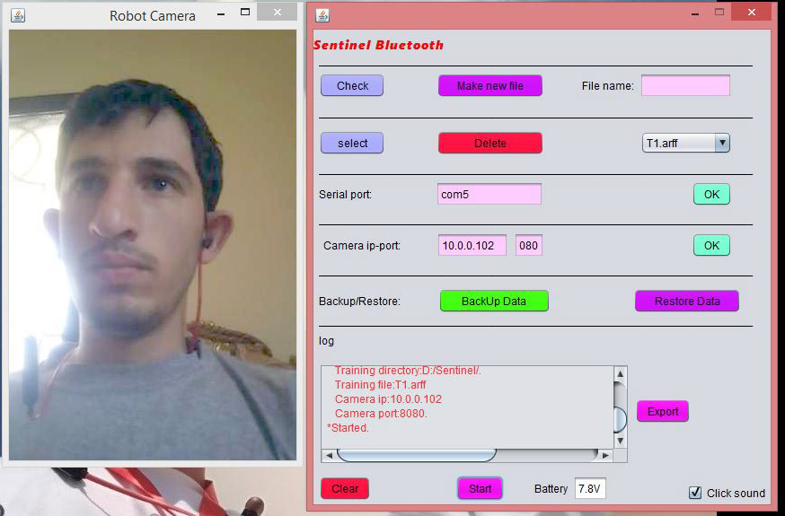
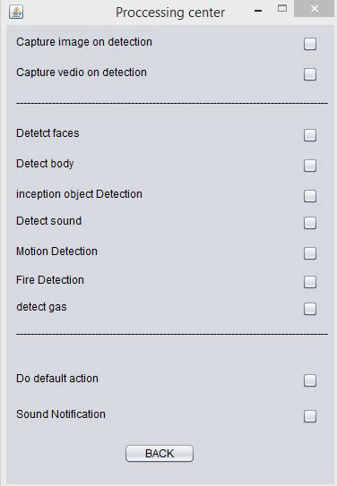
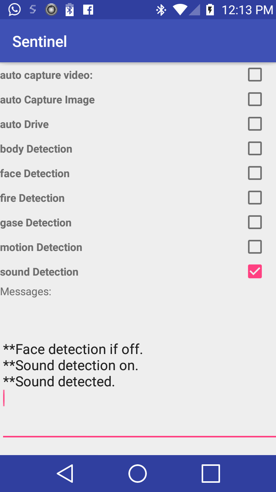
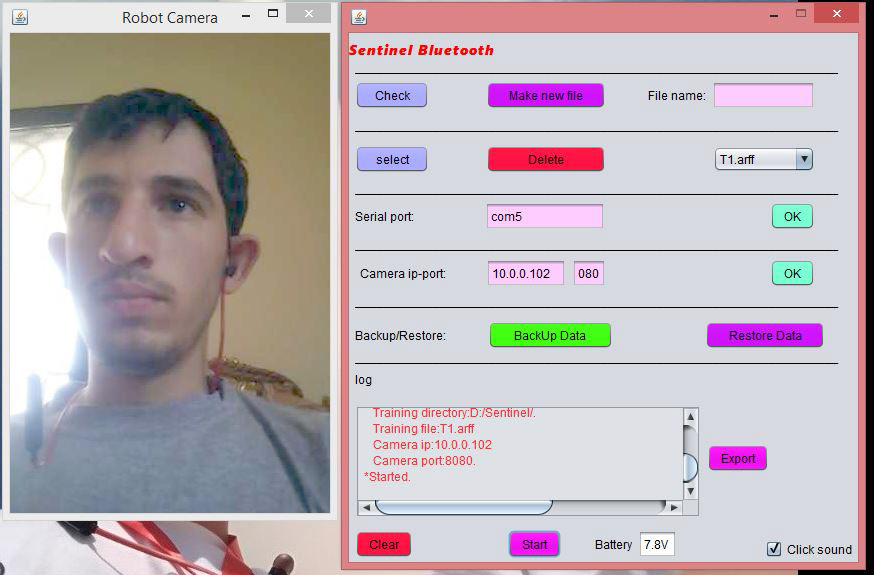
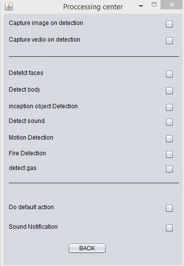
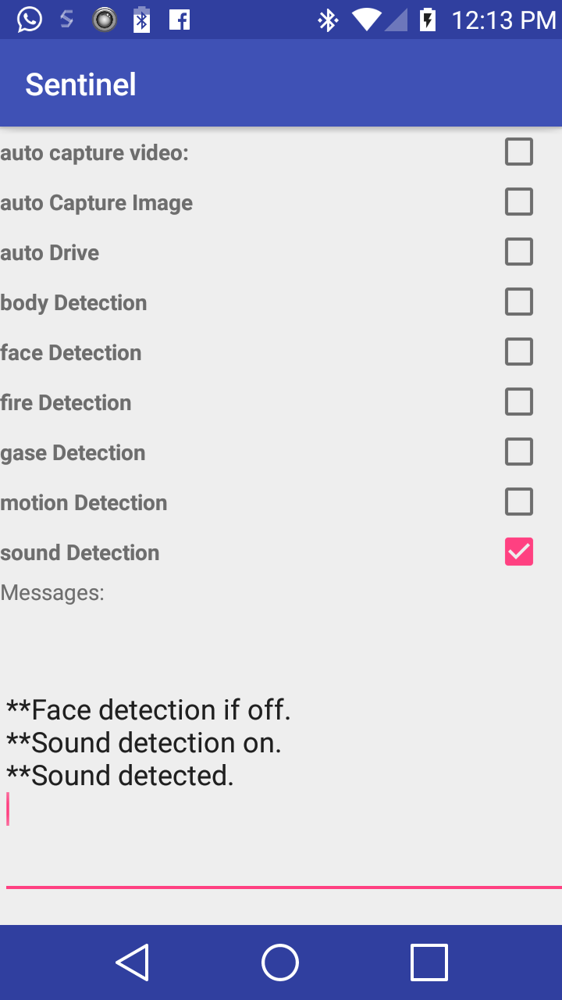
Sentinel is an artificial intelligent autonomous driving security robot. It supports different Image processing and deep learning algorithms supported with a bunch of gas, sound and motion sensorts. it can detect suspicious behavior, faces, motions, sounds, toxic gases, shotguns and more. in such a situation it will capture video and images then push them to cloud based storage and send a real time push notification to your phone. sentinel can detect new objects by providing single image for it using SURF and inception. It uses re-enforcment learing for driving utilizing a seven ultrasonic sensors. With live training mode it can adapt to its environment.